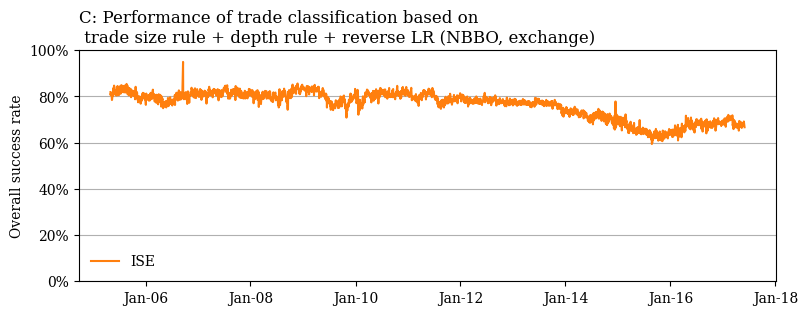

Option trade classification
Setup Rules¶
This tutorial aims to reproduce plots from a working paper by Grauer et. al 1, which achieves state-of-the-art performance in option trade classification. The authors recommend to classify option trades by:
[...] our new trade size rule together with quote rules successively applied to NBBO and quotes on the trading venue. Quotes at the midpoint on both the NBBO and the exchange should be classified first with the depth rule and any remaining trades with the reverse tick test.
There's a lot going on.🥵
To match the author's description, we first set up layers. We use the tclf implementation of the tradesize, quote, and depth rule, as well as reverse tick test. The subset named "ex" refers to exchange-specific data, "best" to the NBBO and "all" for inter-exchange level data. Identical to the paper, the reverse tick test is applied at the inter-exchange level, due to the devastating results of tick-based algorithms at the exchange level. The authors perform random classification on unclassified trades, hence we choose strategy="random".
from tclf.classical_classifier import ClassicalClassifier
layers = [
("trade_size", "ex"),
("quote", "best"),
("quote", "ex"),
("depth", "best"),
("depth", "ex"),
("rev_tick", "all"),
]
clf = ClassicalClassifier(layers=layers, strategy="random")
Prepare Dataset¶
Next, we need to load a dataset of option trades. I chose one, which was recorded at the ISE and used in the paper to evaluate the trade classification rules. I access it from a google cloud bucket and load it into a pandas dataframe X.
import gcsfs
import pandas as pd
fs = gcsfs.GCSFileSystem()
gcs_loc = fs.glob(
"gs://tclf/bucket_name/dir_name/*"
)
X = pd.read_parquet(gcs_loc, engine="pyarrow", filesystem=fs)
tclf. We take care of this next.😅
clf.fit(X)
>>> ValueError: Expected to find columns: ['ask_best', 'ask_size_best', 'bid_best', 'bid_size_best', 'trade_price', 'trade_size']. Check the naming/presence of columns. See: https://karelze.github.io/tclf/naming_conventions/
The calculation of the depth rule requires the columns ask_{subset}, bid_{subset}, and trade_price, as well as ask_size_{subset}, bid_size_{subset} and trade_size. The columns BEST_ASK, BEST_BID, TRADE_PRICE, and TRADE_SIZE are renamed to match our naming conventions of ask_{subset}, bid_{subset}, trade_price, and trade_size.
As there is no {ask/bid}_size_best at the NBBO level (subset="best"), I copy the columns from the trading venue. This allows us to mimic the author's decision to filter for mid-spread at the NBBO level, but classify by the trade size relative to the ask/bid size at the exchange.
We save the true label y_true and the timestamp of the trade QUOTE_DATETIME to a new dataframe, named X_meta, which we use for plotting. We remove these columns from the original dataframe.
X = X.rename(
{
"TRADE_PRICE": "trade_price",
"TRADE_SIZE": "trade_size",
"BEST_ASK": "ask_best",
"BEST_BID": "bid_best",
"buy_sell": "y_true",
},
axis=1,
)
features_meta = ["QUOTE_DATETIME", "y_true"]
X_meta = X[features_meta]
X = X.drop(columns=features_meta)
X[["ask_size_best", "bid_size_best"]] = X[["ask_size_ex", "bid_size_ex"]]
Generate Results¶
Next, we can simply pass the prepared dataframe X to the classifier and append the results to our dataframe X_meta.
X_meta["y_pred"] = clf.fit(X).predict(X)
To estimate the accuracy over time, we group by date and estimate the accuracy for each group. We make use of sklearn.metrics.accuracy_score.
from sklearn.metrics import accuracy_score
df_plot = X_meta.groupby(X_meta.QUOTE_DATETIME.dt.date).apply(
lambda x: accuracy_score(x["y_true"], x["y_pred"]) * 100
)
Plot Results¶
We use matplotlib to match the plots from the paper as closely as possible.
import matplotlib.pyplot as plt
from matplotlib.dates import DateFormatter
from matplotlib.ticker import PercentFormatter
plt.rcParams["font.family"] = "serif"
plt.figure(figsize=(9, 3))
plt.grid(True, axis="y")
# line plot
plt.plot(df_plot, color="tab:orange", linewidth=1.5, label="ISE")
# y-axis + x-axis
plt.ylim(0, 100)
plt.ylabel("Overall success rate")
ax = plt.gca()
ax.yaxis.set_major_formatter(PercentFormatter(100, decimals=0))
ax.xaxis.set_major_formatter(DateFormatter("%b-%y"))
# title + legend
plt.title(
"C: Performance of trade classification based on\n trade size rule + depth rule + reverse LR (NBBO,exchange)",
loc="left",
)
plt.legend(loc="lower left", frameon=False)
plt.show()
Output:

Pretty close to the author's work. Just spanning a shorter period of time.🙂
-
Grauer, C., Schuster, P., & Uhrig-Homburg, M. (2023). Option trade classification. https://doi.org/10.2139/ssrn.4098475↩